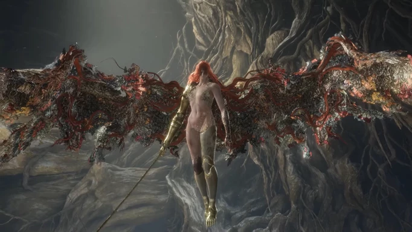

Los mejores Jefazos de Elden Ring
Hemos recopilado varios de los mejores jefes del juego, junto
a su localización, descripción y forma de vencerlos para que no te quedes
atascado en ninguno de ellos durante tu partida.
Margit, el Augurio Caído
|
Localización: Castillo de Velo Tormentoso
Margit es un boss extremadamente agresivo y muy centrado en el combate a corta distancia.
Cuenta con varios combos cuerpo a cuerpo que, aunque se pueden ver venir, cuentan con un timing un poco extraño.
Presta especial atención a cuando levante el garrote sobre su cabeza y lo sujete con ambas manos para lanzar un golpe vertical:
si esquivas hacia su izquierda y no te golpea, tendrás unos instantes para hacerle daño antes de retirarte para evitar que te golpee con su cola
|
El lobo rojo de Radahn
|
Localización: Academia de Raya Lucaria
Debes tener en cuenta que estamos ante un boss más ágil que poderoso, pero cuyos ataques tienden a atacarte en arco, cubriendo mucha superficie.
Principalmente intentará atacarte con una espada mágica, de lado a lado o de manera vertical.
El tajo horizontal es sencillo de esquivar, el vertical tiene algo de seguimiento y puede darte un susto.
Por el contrario, si se aleja, lanzará magia en arco. Son proyectiles que irán directos a por ti en semicírculo,
así que procura esquivar de frente más que moverte a un lado o te comerás alguno que pueda cambiar lo suficiente de trayectoria.
|
Radahn, Azote de las estrellas

|
Localización: Castillo de la Melena Roja
Cuando empiece el combate, Radahn estará en el centro del campo de batalla.
La zona es gigantesca y usará un gran arco para lanzar flechas de rayo.
Para evitarlas debes rodar en el último momento o usar los montones de armas como obstáculo.
Por increíble que parezca, aguantarán el impacto.
Al avanzar, activa las señales de invocación
En la segunda fase, tus aliados fantasma ya habrán alcanzado al jefe y Radahn sacará sus enormes machetes.
Aquí tienes dos opciones: la primera es limitarte a invocar y atacar a distancia, esquivando los ataques de Radahn
siempre que puedas. Si te atreves, tiradas por el escenario hay varias Lanzas de Radahn, que se usan como flechas de
arco grande. La segunda es acercarte y atacar cuerpo a cuerpo, especialmente con armas de Hemorragia (es muy vulnerable a ello).
No olvides volver a invocar NPCs cada vez que caigan, las marcas irán apareciendo por la zona de combate.
Mucho cuidado porque si el combate se alarga, saltará al cielo y caerá en forma de meteorito
impactando y creando una explosión en área como una bomba nuclear.
|
Lord Rykard, Señor de la blasfemia
|
Localización: Mansión del Volcán, Monte Gelmir
En primer lugar y antes de avanzar hacia el jefe, tras cruzar la puerta de la niebla, mira a la izquierda.
Verás un cadáver con un objeto, es la lanza Cazador de serpientes.
Equipa cualquier talismán que aumente tu Fuerza y/o Destreza, que es con lo que escala el arma.
Este arma es la manera correcta de enfrentarse al jefe, es imposible que lo elimines con flechas o hechizos.
Mientras dure el combate, la lanza tiene un efecto especial, haciendo un daño aumentado,
además de lanzar una corriente de aire que golpea a mucha distancia.
Con esto en mente, el combate se divide en dos fases.
Durante la primera te enfrentarás a una enorme serpiente.
Durante toda esta fase, tienes que estar pendiente de la cabeza para saber cómo atacará.
|
Malenia, La espada de Miquella

|
Localización: Árbol Hierático de Miquella
Malenia es rápida y mortal.
Lo primero que debes saber es que Miquella se cura cada vez que hace daño, te protejas o no.
Después, descarta el parry a sus ataques.
Suele apartarse cuando lo haces, y lo más posible es que te comas un buen espadazo.
Después de esto, vamos a hablar de sus puntos débiles.
Empezamos teniendo en cuenta que es un enemigo humanoide.
Es decir, es posible desequilibrarla con un golpe fuerte.
Esto va a jugar a tu favor más que nunca, porque tu objetivo es romper sus ataques para evitar que te reviente con una velocidad bastante vergonzosa.
Aparte, es vulnerable a Congelación y Hemorragia. En nuestro caso, hemos optado por combinar los tres conceptos:
usa las Cenizas de Guerra para crear dos armas de congelación y hemorragia (hay multitud de opciones),
invoca tu Lágrima Mímica con ellas equipadas y luego cambia a un arma cuerpo a cuerpo pesada.
Así, mientras tu doble causa estados alterados, tú lanzarás ataques pesados para desequilibrar a Malenia.
Procura apuñalarla de frente, harás mucho mas daño.
|
Maliketh, La hoja negra
|
Localización: Catedral en Ruinas de Farum Azhula
El combate se divide en dos partes. Durante la primera, te enfrentarás al Clérigo bestia.
Usará ataques relativamente fáciles de esquivar, pero debes tener cuidado cuando machaque el suelo, porque hará un ataque de área.
El resto de golpes, curiosamente, puedes evitarlos plantándote bajo el jefe.
Ataca sin descanso hasta que le quites algo más del 50% de vida y veras una secuencia.
Tras la escena, el combate es contra Maliketh, la Hoja Negra.
Este combate tienes que terminarlo tan rápido como puedas, arriesgándote.
El jefe hace bastante daño, pero tiene muy, muy poca vida.
Sus ataques se centran en mover la espada de un lado a otro, en ataques bastante fáciles de evitar.
El principal problema en cuanto a sus ataques es que debes tener cuidado cuando salte.
Si ves que se preparar para hacer una especie de pirueta, va a girar y lanzar al menos dos ondas de energía, una detrás de otra.
Si el ataque va con más velocidad, va a clavarse contra el suelo y luego a estallar.
Retrocede tanto como puedas para salir de la zona de efecto.
|
Señor dragón Placidusax

|
Localización: Ciudad Perdida de Farum Azhula
Antes de nada, olvídate de lo que sabes de otros dragones: Placidusax se comporta de manera completamente distinta al resto.
Ponte defensa eléctrica porque te vas a llevar mas palos que una mula alquilada.
Nuestra estrategia ha consistido en hacerle daño vía hemorragia, a la que es bastante vulnerable.
Haz tanto daño como puedas con armas de este tipo para darle un buen bajón a la barra de vida del jefe.
En la última parte del combate deberás estar muy atento pues lanzará magias y rayos sin parar aleatoriamente por el terreno
de combate. Záfate como puedas y con cuidado acércate a él para darle los últimos golpes de gracia.
|
|